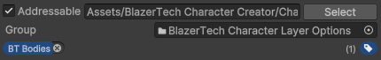

Character Layers
A Character Layer represents a single visual component of a character such as a body, outfit, or hairstyle.
A Layered Character is created by stacking multiple layers together.
Each layer uses a spritesheet that contains all animation frames for that part of the character.
There are three main concepts involved when working with layers:
| Concept | Description |
|---|---|
| Character Layer | A visual part of a character (Body, Outfit, Hair, etc.) |
| Character Layer Definition | An asset that defines all spritesheets available for that layer |
| Character Layer Option | A single spritesheet that can be used for that layer |
Character Layer Definitions
Character Layer Definitions are scriptable objects that define all available spritesheets that can be used for a specific layer of a Layered Character.

Each Layered Character is built by combining multiple layers together.
Example Character Layers:
- Body
- Outfit
- Hairstyle
- Accessory
Character Layer Definitions are connected directly to a Layered Character Type asset.
Creating a Character Layer Definition
To create a new Layer Definition:
- Right click the Project window
- Navigate to: Create > BlazerTech > Character Management System > Layered Character Type > Layer Definition

Create a new Layer Definition for every layer you want your characters to have.
Once all Layer Defintions have been created, add them to the Layers list inside your Layered Character Type.

The order of the layers in this list determines the render order.
Layers are rendered from top to bottom in the list, meaning:
- Top of List = Rendered First (Behind)
- Bottom of List = Rendered Last (In Front)
Character Layer Options
A Character Layer Option represents a single spritesheet that can be used for a layer.
Each entry in the Layer Options list corresponds to one possible appearance for that layer.

For a Layered Character to be created, a Layer Option must be chosen from every layer.
Caution
All layer spritesheets must be the exact same size as the Base Spritesheet defined in the Layered Character Type asset.
If the dimensions do not match, the spritesheet will be considered invalid.
A Character Layer Option is internally used by the Character Management System to reference and load the spritesheet when the character is created.
Adding Layer Options
Layer Options are not added manually to the list.
Instead, they are automatically collected using Unity's Addressables system.
To add a spritesheet as a valid option:
- Select the spritesheet in the Project window
- In the Inspector, enable Addressable at the top
- Assign the correct Addressables Label.
The label must match the Layer Asset Label configured in the Character Layer Definition asset.

Tip
You can mark an entire folder as Addressable and assign a label.
All assets inside the folder will be automatically marked as Addressable and inherit the label.
After labeling all spritesheets, return to the Character Layer Definition asset and press Collect Layer Options

Tip
The Layered Character Type asset also contains a Collect Layer Options button which collects options for all layers at once.
Spritesheet Requirements
Important
All layer spritesheets must use the same frame layout as the Base Spritesheet.
This means:
- Same texture dimensions
- Same frame sizes
- Same frame positions
Required Settings
- Sprite Mode = Single
Layer spritesheets must use Single mode because the system does not use individual sprite frames.
Instead, the entire spritesheet texture is passed to the Character Shader, which handles rendering the character.
Read More → The Character Shader
Recommended Settings
- Filter Mode = Point (No Filter) - Keeps image sharp
- Compression = None - Generally not needed for pixel art
Spritesheet Blurry?
If your spritesheet is blurry even after setting the Filter Mode to Point, check if the spritesheet size is greater than the Max Size setting. If it is, increase the Max Size.

Fields
Below is a description of every field in the Character Layer Definition asset.
Attached Character Type
The Layered Character Type asset that this layer belongs to.

This is used to ensure the layer only collects spritesheets that match the Base Spritesheet size.
Layer Name
The display name of the layer.

This name is used by the Character Creator when showing layer names in the UI.
The name does not need to be unique.
Layer Asset Label
The Addressables Label used to collect spritesheets for this layer.

The Character Management System uses Unity Addressables to dynamically load and unload spritesheets.
All spritesheets intended for this layer must:
- Be marked as Addressable
- Use the same label configured in this field.
When the Collect Layer Options button is pressed, all spritesheets using this label are added to the Layer Options list.
Read Adding Layer Options for more info.
Include Blank Option
If enabled, a blank option will be automatically added to the Layer Options list.

This allows characters to be created without using that layer.
Example use cases:
- Characters without accessories
- Characters without facial hair
If this option is selected at runtime, an empty sprite will be used instead of a spritesheet.

Inspector Buttons
Collect Layer Options
Searches for all spritesheets that:
- Are marked as Addressable
- Match the Layer Asset Label
- Have the same texture dimensions as the Base Spritesheet
If all conditions are met, the spritesheet is added to the Layer Options list.
Clear Options List
Removes all entries from the Layer Options list.
Tip
This action can be undone using Ctrl + Z (Windows) or Command + Z (Mac).